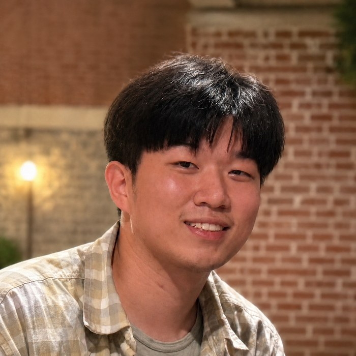
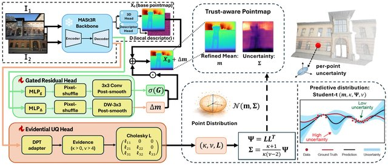
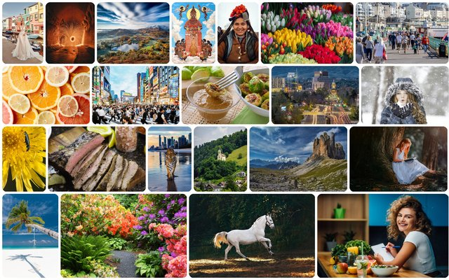
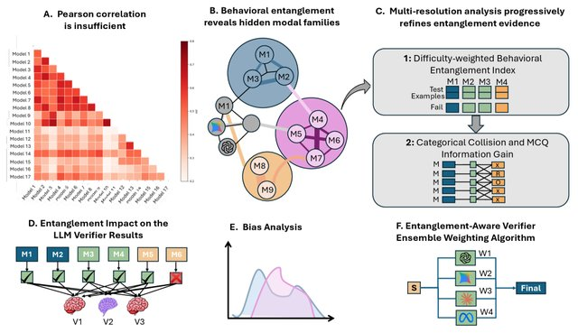
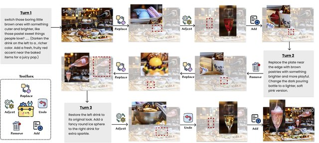
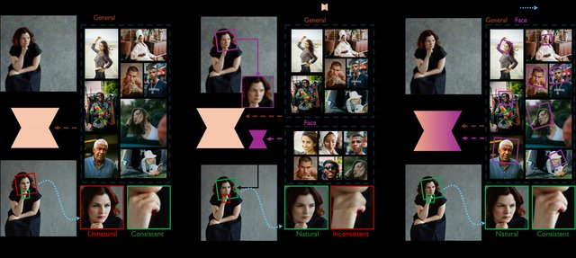
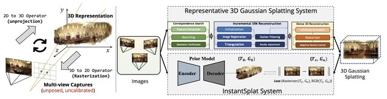

|
Zihao (Zack) Zhu
I am an incoming Ph.D. student in Electrical & Computer Engineering at Texas A&M University, advised by Prof. Zhiwen Fan.
I received my B.S. from Texas A&M University, where I worked with Prof. Zhengzhong Tu.
My research interests lie in 3D reconstruction, image restoration and generation, multi-agent systems, and trustworthy, uncertainty-aware machine learning.
Email /
CV /
Scholar /
GitHub
|

|
News
| Jun |
2026 |
I will join Texas A&M ECE as a Ph.D. student in Fall 2026. |
| May |
2026 |
Trust3R is accepted to ICML 2026. |
| May |
2026 |
We released 4KLSDB, a large-scale native-4K dataset for image restoration and generation (CVPR 2026 DataCV Workshop). |
|
Publications
Representative papers are highlighted. * denotes equal contribution and † denotes the corresponding author.
|
|

|
Trust It or Not: Evidential Uncertainty for Feed-Forward 3D Reconstruction with Trust3R
Zihao Zhu*, Wenyuan Zhao*, Nuo Chen, Chao Tian†, Zhiwen Fan†
ICML, 2026
arXiv /
project page /
code
Equips feed-forward 3D reconstruction with probabilistically grounded, evidential pointmap uncertainty, so you know which parts of the predicted geometry to trust.
|
|

|
4KLSDB: A Large-Scale Dataset for 4K Image Restoration and Generation
Zihao Zhu, Kuan-Ru Huang, Zhaoming Xu, Renjie Li, Bo Wu, Ruizheng Bai, Mingyang Wu, Sayak Paul, Zhengzhong Tu†
CVPR Workshops (DataCV), 2026
arXiv /
project page /
code & data
129,484 carefully curated native-4K images for training and benchmarking super-resolution and text-to-image diffusion models.
|
|

|
How Independent are Large Language Models? A Statistical Framework for Auditing Behavioral Entanglement and Reweighting Verifier Ensembles
Chenchen Kuai*, Jiwan Jiang*, Zihao Zhu, Hao Wang, Keshu Wu, Zihao Li, Yunlong Zhang, Chenxi Liu, Zhengzhong Tu, Zhiwen Fan, Yang Zhou†
arXiv preprint, 2026
arXiv
A statistical framework for auditing hidden behavioral dependencies among LLMs and reweighting verifier ensembles accordingly.
|
|

|
Agent Banana: High-Fidelity Image Editing with Agentic Thinking and Tooling
Ruijie Ye*, Jiayi Zhang*, Zhuoxin Liu*, Zihao Zhu, Siyuan Yang, Li Li, Tianfu Fu, Franck Dernoncourt, Yue Zhao, Jiacheng Zhu, Ryan Rossi, Wenhao Chai, Zhengzhong Tu†
arXiv preprint, 2026
arXiv /
project page
An agentic framework for multi-turn, high-fidelity editing of ultra-high-resolution images via context folding and layer decomposition.
|
|

|
HeadsUp! High-Fidelity Portrait Image Super-Resolution
Renjie Li, Zihao Zhu, Xiaoyu Wang, Zhengzhong Tu†
arXiv preprint, 2025
arXiv
A single-step diffusion model that restores and upscales portrait images end-to-end, with the new PortraitSR-4K dataset.
|
|

|
InstantSplat++
Zihao Zhu
Open-source project, PhAI Lab, 2026
code
An improved InstantSplat framework for sparse-view, large-scale scene reconstruction with Gaussian Splatting. 200+ stars on GitHub.
|
|